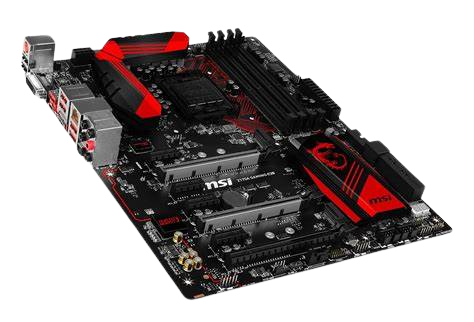

Motherboard, Mainboard гэдэг нь нэг утгыг агуулдаг. Өөрөөр хэлбэл эх хавтанг ингэж нэрлэдэг бөгөөд компьютeрийн хурд хүч, багтаамж ямар байх нь эх хавтангаас ихээхэн шалтгаалдаг байна. Сайн эх хавтан худалдаж авсан тохиолдолд компьютeрийн хүчин чадлыг ихэсгэж, сайжруулан өргөтгөх боломжтой байдаг. Харин Onboard эх хавтангийн нэг төрөл бөгөөд ихэвчлэн оффис болон бичиг хэргийн зориулалтаар ашиглагдаж байна. Сайн motherboard-тай болмоор байвал Asus, Intel, дунд зэргийнхийг сонгохоор бол Gigabyte, MSI, харин мөнгөө хэмнэе гэвэл бусад төрлийнхийг аваарай. Хэрвээ та компьютeр худалдаж авахаар шийдсэн бол эх хавтангийн үзүүлэлтийг сайн харах хэрэгтэй. Ямар фирмд үйлдвэрлэсэн болон, түүний хүчин чадал, өргөтгөх боломж, эх хавтан дээр суурилах төхөөрөмжүүдийн төрөл марк зэргээс шалтгаалан үнийн зөрүүтэй байдаг. Нэг үгээр хэлэхэд сайн компьютeртэй болохын тулд сайн эх хавтантайг нь сонгох хэрэгтэй гэсэн үг.
